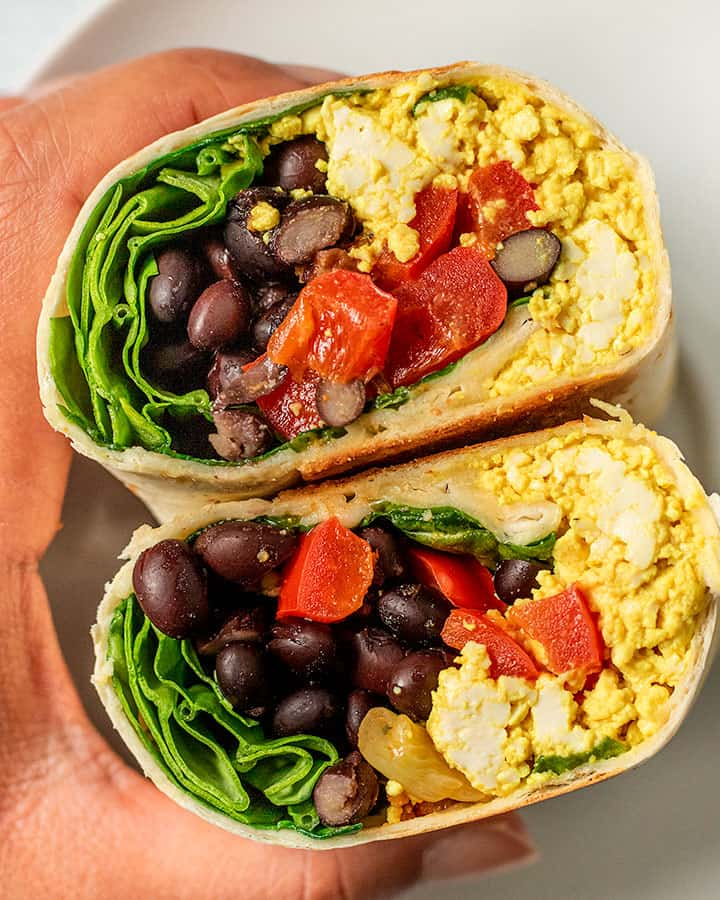

Bean Burritos

Delicious homemade burritos
Bean burritos are a delicious and wholesome option, perfect for a quick meal or a satisfying dinner. These burritos are packed with vibrant, plant-based ingredients that not only taste great but also provide a nutrient-dense meal. Each bite offers a medley of textures and flavors, from creamy avocado and hearty beans to crunchy vegetables and tangy salsa.
Ingredients
- Tortilla Wraps: 2 large tortillas
- Beans: 1 cup black beans, 1 cup pinto beans
- Rice: 1 cup cooked brown rice
- Vegetables: 1 bell pepper (diced), 1/2 red onion (diced), 1/2 cup corn kernels
- Avocado: 1 avocado (sliced)
- Salsa: 1/2 cup tomato salsa or pico de gallo
- Vegan Cheese: 1/2 cup shredded vegan cheese
- Lettuce: 1 cup shredded romaine or iceberg lettuce
- Sauces: 1/4 cup vegan sour cream, 1 tablespoon hot sauce (optional), juice of 1/2 lime
Steps
- Cook the Rice: Cook 1/2 cup of brown rice according to package instructions to yield 1 cup of cooked rice. Once cooked, mix in the juice of 1/2 lime and 1 tablespoon of chopped cilantro.
- Prepare the Beans: In a skillet, warm 1 cup of black beans and 1 cup of pinto beans with 1 tablespoon of olive oil, 1/2 teaspoon cumin, 1/2 teaspoon paprika, and 1/2 teaspoon garlic powder. Cook until heated through.
- Chop the Veggies: Dice 1 bell pepper and 1/2 red onion. Measure out 1/2 cup of corn kernels. Shred 1 cup of romaine or iceberg lettuce. Slice 1 avocado.
- Assemble the Burritos: Lay out 2 large tortillas. Evenly divide and layer on the cooked rice, beans, diced bell pepper, diced red onion, corn kernels, avocado slices, 1/2 cup of tomato salsa, and 1/2 cup of shredded vegan cheese.
- Add Sauces and Wrap: Drizzle with 1/4 cup vegan sour cream and 1 tablespoon hot sauce (if using). Squeeze the juice of 1/2 lime over the fillings. Fold the sides of each tortilla inward and roll up from the bottom to secure all the fillings.
- Serve: Serve the burritos immediately, or wrap them in foil for an easy on-the-go meal.